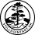
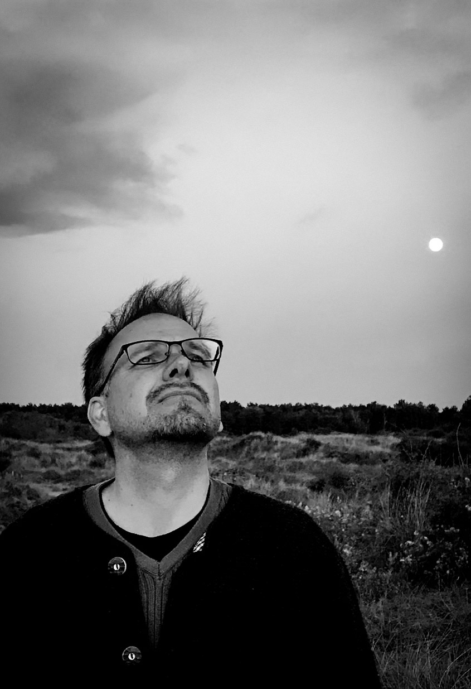
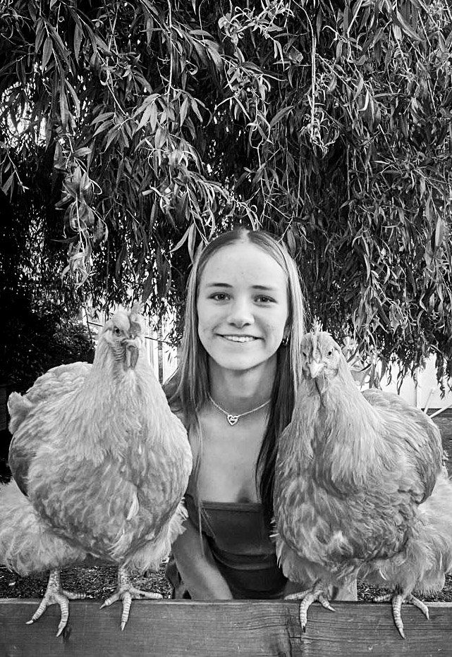

Stillpoint ArtThe photographic works presented here are not landscapes or surrounding environments in the conventional sense. They are objects of contemplation, based on a practice of direct perception (Miksang) that establishes immediate, unconditioned connections with the world around us.
Every image seeks to hold the first moment of seeing, before the conceptual mind intervenes with memory or expectation.
The stillpoint is that momentary resting place of perception at the heart of constant change. This stillness resonates with two guiding Japanese aesthetics:
These photographs invite you to slow down, to gaze and relax the habitual mind. They are taken as echoes of stillness, resisting the need for explanation.

As a scientist with a PhD in Evolutionary Ecology, my work has always been concerned with structure, time, and the ceaseless dynamic flow of life and death. This scientific view found its mirror in the philosophy of Soto Zen and the direct perception methodology of Miksang (The Good Eye).
For decades, I have understood the landscapes around me as teachers and friends: from the Bavarian riverbeds shaped by the last ice age, the majestic European alps, and the foothills of the Pyrenees, to the forests of Scandinavia, and the primal light of Tasmania. Now settled amid the varied landscapes of Formby, with its dunes, the Irish Sea, and the pinewoods, the photograph is a glimpse of my unconditioned reality, rather than an account of place alone.
Prints in monochrome remove the distraction of colour and allow the eye to meet and focus on the fundamentals—light, form, silence, and interconnectedness.

Stillpoint Art Studio is evolving through a collaboration with my daughter, Lilly Skye. Her work explores the relationship between structure, movement, and the environment. Trained as a ballet dancer and athlete, she approaches the landscape not just as a visual space, but as a stage for physical discipline and dynamic presence.
Lilly Skye is a 15-year-old artist and GCSE Photography student. Her photographs often capture the interplay of light and form found in coastal environments, mirroring the discipline and tension inherent in her primary pursuits of neo-classical ballet.